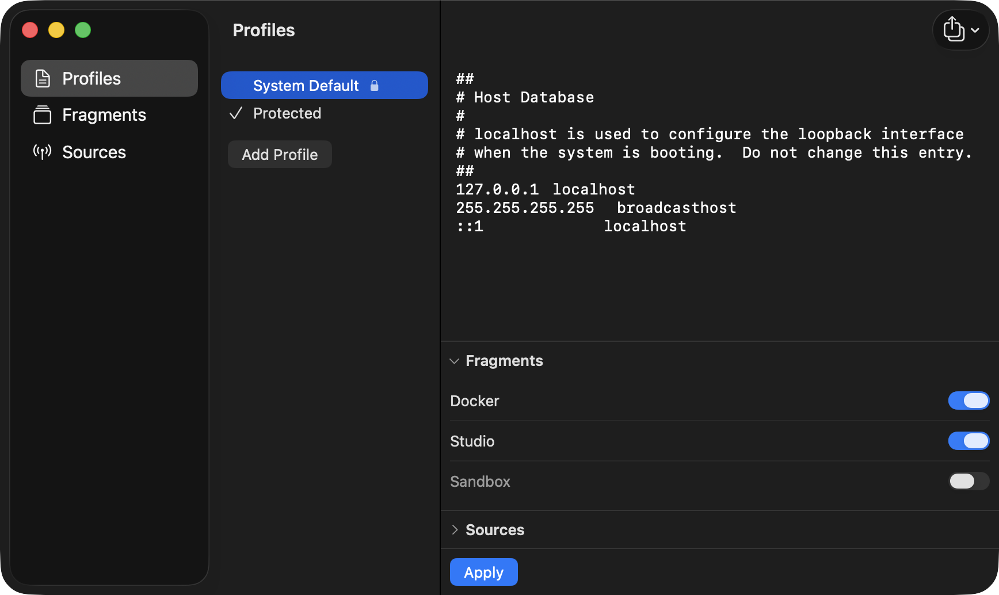

Hosts Switchr
Switch your /etc/hosts with a click — profiles, blocklists, and reusable fragments, right from the menu bar.
Download for macOS
v0.2.5·macOS 26 (Tahoe)+·Free & open-source
Switch your /etc/hosts with a click — profiles, blocklists, and reusable fragments, right from the menu bar.
v0.2.5·macOS 26 (Tahoe)+·Free & open-source

A profile is a named /etc/hosts. Build a few, switch between them instantly, and layer on blocklists and snippets as you need them.
profiles
Create named /etc/hosts setups and flip between them from the menu bar. The active one is a single click away.
sources
Subscribe to hosts-format lists — StevenBlack, HaGeZi, or your own URL. They refresh in the background with ETag caching.
fragments
Toggle a snippet — like your Docker container hostnames — into any profile. Edit freely; re-apply once when you're ready.
apply
A "needs re-apply" badge appears when your edits drift from what's live. Cancel reverts cleanly to the applied state.
backup
Back up your whole setup to JSON, restore it on another Mac, or import a plain hosts file as a profile or fragment.
updates
Runs menu-bar-only, no Dock icon. New versions install themselves in place from GitHub — no quitting, no drag-and-drop.
Hosts Switchr uses no Apple Developer Program, so macOS asks you to approve it once. Here's the whole dance.
Double-click Hosts Switchr. When macOS says it "can't verify the developer," click Done — not "Move to Trash."
Open System Settings → Privacy & Security, scroll to Security, and click Open Anyway.
Authenticate and click Open. macOS only asks once — after that it launches normally.
Your machine stays in your hands. /etc/hosts only ever changes when you click Apply, via one admin-password prompt. No signing, no background helper daemon, no Developer Program.